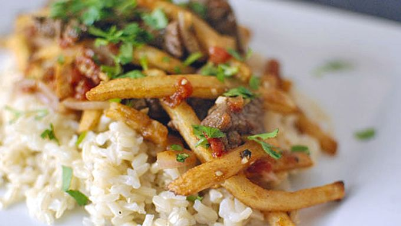

Piggly's Fry Rice 4U

Piggly's Steamy Fry Rice 4U is a savory dish that will have you limping back for fourths.
Ingredients
(for 1 serving)
- 1/2 bag French Fries (any-brand)
- 1 cup rice
- 1 cup mixed veg
- 1/2 lb beef or choice of meat
- 1 tbs butter
- 3 tbs salt
- 1 tbs pepper
- Preheat oven to 425 F and add French fries for 15-17 minutes
- Bring 1 cup water to a boil while fries are heating
- Add 1 tbs of salt and butter to boiling water
- Add 1 cup of rice to water and let boil for 1 minute
- Turn off stove and cover rice for 15 minutes
- Fry 1/2 lb of meat on large skillet or wok until internal temp of 150 F
- Mix finished fries, rice and choice of meat
- Add 2 tbs salt and papper
- Add any optional seasonings of your liking
- enjoy